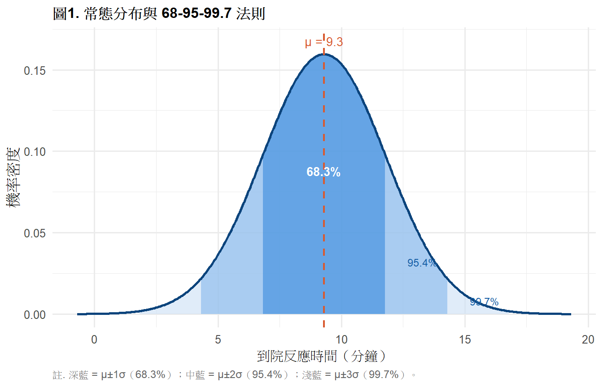
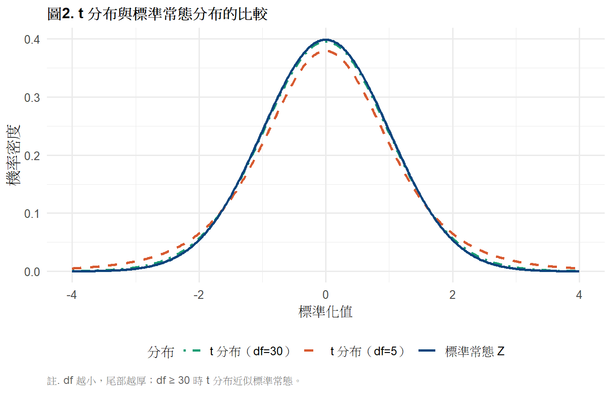
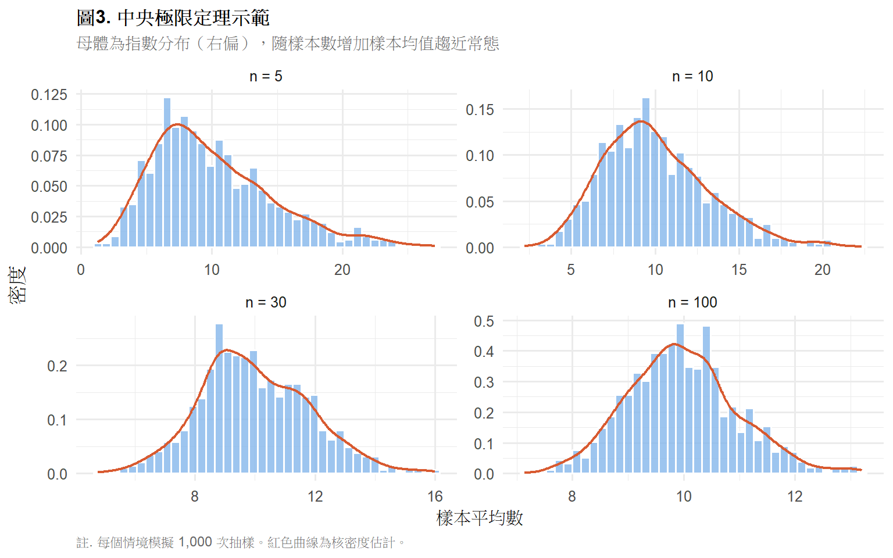
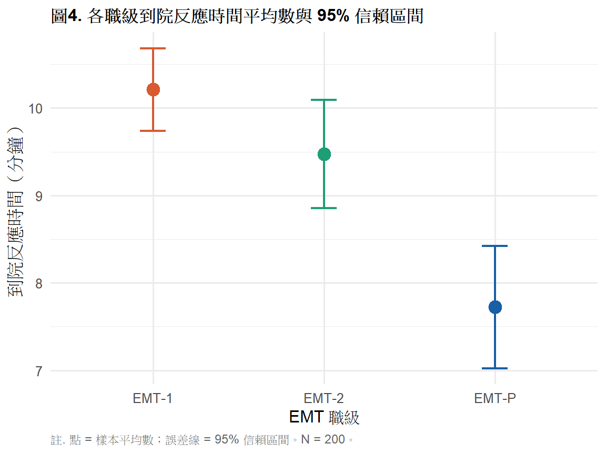

library(tidyverse)
library(gt)
ems <- read.csv("data/ems_main.csv",
fileEncoding = "UTF-8",
stringsAsFactors = FALSE)
ems$level <- factor(ems$level,
levels = c("EMT-1", "EMT-2", "EMT-P"))第4週：機率分布與抽樣理論
常態分布、中央極限定理、標準誤差、信賴區間
本週學習目標
- 理解常態分布的性質與 68-95-99.7 法則
- 掌握中央極限定理（CLT）的意義
- 區分標準差（SD）與標準誤差（SE）
- 正確建構與詮釋信賴區間
統計方法對照表（本週位置）
註釋
本週是推論統計的理論基礎，不對應特定 X-Y 分析方法。 從第 5 週開始的每一個推論方法——t 檢定、ANOVA、回歸—— 背後都是本週這些概念在運作。
| 概念 | 說明 | 首次應用 |
|---|---|---|
| 常態分布 | t 檢定的假設之一 | 第 6 週 |
| 標準誤差 | t 統計量的分母 | 第 6 週 |
| 信賴區間 | 所有推論統計的報告標準 | 第 6 週起 |
| 中央極限定理 | 大樣本不需常態假設的理由 | 第 6 週 |
一、統計理論
1.1 機率分布的概念
機率分布描述一個隨機變數所有可能值的機率。 統計推論的核心邏輯是：
觀察到一個樣本統計量（例如樣本平均數）
↓
在某個假設（H₀）成立的前提下
這個統計量服從某個分布
↓
計算「觀察到這個值或更極端值」的機率
↓
這個機率就是 p 值所以選錯分布 = 用錯檢定。了解分布是了解統計檢定的前提。
1.2 常態分布
\[X \sim N(\mu, \sigma^2)\]
常態分布是統計學最重要的分布，由 μ（位置）和 σ（形狀）完全決定。
性質：
- 對稱，以 μ 為中心
- 平均數 = 中位數 = 眾數
- 曲線下面積總和 = 1
68-95-99.7 法則：
| 範圍 | 涵蓋比例 |
|---|---|
| μ ± 1σ | 約 68.3% |
| μ ± 2σ | 約 95.4% |
| μ ± 3σ | 約 99.7% |
提示
EMS 實務意義： 若反應時間 ~ N(9.3, 2.5²)，則約 95% 的出勤反應時間 落在 9.3 ± 2×2.5 = [4.3, 14.3] 分鐘之間。 超過 14.3 分鐘的案件只佔約 2.5%，可視為異常值。
1.3 標準常態分布（Z 分布）
\[Z = \frac{X - \mu}{\sigma} \sim N(0, 1)\]
把任何常態分布標準化，得到平均數 = 0、標準差 = 1 的標準常態。
Z 分數的意義： 這個觀察值距離平均數幾個標準差？
- Z = 1.96 → 右側面積 = 2.5%（雙尾 α = 0.05 的臨界值）
- Z = 1.64 → 右側面積 = 5%（單尾 α = 0.05 的臨界值）
1.4 t 分布
當母體標準差 σ 未知（幾乎所有實際情況）， 用樣本標準差 s 估計時，統計量服從 t 分布：
\[T = \frac{\bar{X} - \mu}{s / \sqrt{n}} \sim t_{(n-1)}\]
t 分布的特性：
- 比標準常態更「胖尾」（heavy tail）
- 自由度 df = n - 1
- df 越大 → 越接近標準常態
- df ≥ 30 時，t 分布與 Z 分布幾乎無差異
重要
為什麼用 t 而不用 Z？
因為我們不知道 σ，用 s 估計會引入額外不確定性。 t 分布的胖尾正是在反映這個不確定性—— 在小樣本時，我們對極端值要更保守。
1.5 中央極限定理（CLT）
重要
這是統計學最重要的定理之一。
從任意分布的母體中抽取樣本數 n 的隨機樣本， 當 n 夠大時，樣本平均數的抽樣分布會趨近常態：
\[\bar{X} \sim N\left(\mu, \frac{\sigma^2}{n}\right)\]
三個關鍵點：
- 「任意分布」：母體不需要是常態分布
- 「樣本平均數」：是平均數的分布，不是原始資料的分布
- 「n 夠大」：一般 n ≥ 30 就夠了
原始資料可以偏態（反應時間、收入）
↓
只要樣本夠大（n ≥ 30）
↓
樣本平均數的分布仍然近似常態
↓
t 檢定仍然有效1.6 標準差 vs 標準誤差
這是初學者最常混淆的地方：
| 標準差（SD） | 標準誤差（SE） | |
|---|---|---|
| 描述的是 | 個別觀察值的分散程度 | 樣本平均數的分散程度 |
| 公式 | \(s = \sqrt{\frac{\sum(x_i-\bar{x})^2}{n-1}}\) | \(SE = \frac{s}{\sqrt{n}}\) |
| 用途 | 描述資料變異 | 推論、建構信賴區間 |
| n 增大時 | 不縮小 | 縮小（估計更精確） |
| 報告時機 | 描述統計（Mean ± SD） | 推論統計（CI） |
提示
記憶方式： SD 說的是「個體間有多不一樣」； SE 說的是「如果重複抽樣，平均數會跳多遠」。
1.7 信賴區間（CI）
\[CI = \bar{x} \pm t_{(\alpha/2,\, df)} \times SE\]
95% 信賴區間的正確詮釋：
「用這個方法重複抽樣 100 次並各自建構信賴區間， 其中約 95 個區間會包含真正的母體平均數 μ。」
常見錯誤詮釋：
❌「有 95% 的機率，μ 落在這個區間內」 → 錯！μ 是固定的數，不能說機率。
❌「這個區間內有 95% 的資料」 → 錯！那是 SD 的概念，不是 CI。
重要
CI 的寬窄意義：
- CI 越窄 → 估計越精確（樣本數大、變異小）
- CI 越寬 → 估計越不確定（樣本數小、變異大）
- CI 不含 0（對於差值）→ 統計顯著
二、R 實作
載入套件與資料
圖1. 常態分布與 68-95-99.7 法則
mu <- 9.3; sigma <- 2.5
x <- seq(mu - 4*sigma, mu + 4*sigma, length.out = 500)
df_norm <- data.frame(x = x, y = dnorm(x, mu, sigma))
ggplot(df_norm, aes(x, y)) +
geom_area(data = subset(df_norm,
x >= mu - 3*sigma & x <= mu + 3*sigma),
fill = "#CBE0F5", alpha = 0.6) +
geom_area(data = subset(df_norm,
x >= mu - 2*sigma & x <= mu + 2*sigma),
fill = "#85B7EB", alpha = 0.6) +
geom_area(data = subset(df_norm,
x >= mu - sigma & x <= mu + sigma),
fill = "#378ADD", alpha = 0.6) +
geom_line(linewidth = 1, color = "#0C447C") +
geom_vline(xintercept = mu,
linetype = "dashed",
color = "#D85A30", linewidth = 0.8) +
annotate("text", x = mu, y = max(df_norm$y) * 1.05,
label = paste0("μ = ", mu),
color = "#D85A30", size = 3.5) +
annotate("text", x = mu, y = max(df_norm$y) * 0.55,
label = "68.3%", color = "white",
size = 3.5, fontface = "bold") +
annotate("text", x = mu + 1.6*sigma,
y = max(df_norm$y) * 0.2,
label = "95.4%", color = "#185FA5",
size = 3.2) +
annotate("text", x = mu + 2.6*sigma,
y = max(df_norm$y) * 0.05,
label = "99.7%", color = "#185FA5",
size = 3.0) +
labs(
title = "圖1. 常態分布與 68-95-99.7 法則",
x = "到院反應時間（分鐘）",
y = "機率密度",
caption = "註. 深藍 = μ±1σ（68.3%）；中藍 = μ±2σ（95.4%）；淺藍 = μ±3σ（99.7%）。"
) +
theme_minimal(base_size = 12) +
theme(
plot.title = element_text(face = "bold", size = 12),
plot.caption = element_text(hjust = 0, size = 9,
color = "gray40")
)
圖2. t 分布 vs 標準常態分布
x <- seq(-4, 4, length.out = 500)
df_t <- bind_rows(
data.frame(x = x, y = dnorm(x),
dist = "標準常態 Z"),
data.frame(x = x, y = dt(x, df = 5),
dist = "t 分布（df=5）"),
data.frame(x = x, y = dt(x, df = 30),
dist = "t 分布（df=30）")
)
ggplot(df_t, aes(x, y, color = dist, linetype = dist)) +
geom_line(linewidth = 0.9) +
scale_color_manual(
values = c("標準常態 Z" = "#0C447C",
"t 分布（df=5）" = "#D85A30",
"t 分布（df=30）" = "#1D9E75"),
name = "分布"
) +
scale_linetype_manual(
values = c("標準常態 Z" = "solid",
"t 分布（df=5）" = "dashed",
"t 分布（df=30）" = "dotdash"),
name = "分布"
) +
labs(
title = "圖2. t 分布與標準常態分布的比較",
x = "標準化值",
y = "機率密度",
caption = "註. df 越小，尾部越厚；df ≥ 30 時 t 分布近似標準常態。"
) +
theme_minimal(base_size = 12) +
theme(
plot.title = element_text(face = "bold", size = 12),
plot.caption = element_text(hjust = 0, size = 9,
color = "gray40"),
legend.position = "bottom"
)
圖3. 中央極限定理示範
set.seed(2025)
simulate_clt <- function(n_sample, n_sim = 1000) {
means <- replicate(n_sim,
mean(rexp(n_sample, rate = 0.1)))
data.frame(mean = means,
n = paste0("n = ", n_sample))
}
clt_df <- bind_rows(
simulate_clt(5),
simulate_clt(10),
simulate_clt(30),
simulate_clt(100)
)
clt_df$n <- factor(clt_df$n,
levels = c("n = 5","n = 10","n = 30","n = 100"))
ggplot(clt_df, aes(x = mean)) +
geom_histogram(aes(y = after_stat(density)),
bins = 40, fill = "#85B7EB",
color = "white", alpha = 0.8) +
geom_density(color = "#D85A30", linewidth = 0.8) +
facet_wrap(~ n, scales = "free") +
labs(
title = "圖3. 中央極限定理示範",
subtitle = "母體為指數分布（右偏），隨樣本數增加樣本均值趨近常態",
x = "樣本平均數",
y = "密度",
caption = "註. 每個情境模擬 1,000 次抽樣。紅色曲線為核密度估計。"
) +
theme_minimal(base_size = 12) +
theme(
plot.title = element_text(face = "bold", size = 12),
plot.subtitle = element_text(color = "gray40", size = 10),
plot.caption = element_text(hjust = 0, size = 9,
color = "gray40")
)
信賴區間計算
n <- nrow(ems)
xbar <- mean(ems$response_time)
s <- sd(ems$response_time)
se <- s / sqrt(n)
t_cv <- qt(0.975, df = n - 1)
ci_lower <- xbar - t_cv * se
ci_upper <- xbar + t_cv * se
cat("樣本平均數：", round(xbar, 2), "分鐘\n")樣本平均數： 9.48 分鐘cat("標準差（SD）：", round(s, 2), "\n")標準差（SD）： 2.52 cat("標準誤差（SE）：", round(se, 3), "\n")標準誤差（SE）： 0.178 cat("t 臨界值（df=", n-1, "）：", round(t_cv, 3), "\n")t 臨界值（df= 199 ）： 1.972 cat("95% CI：[", round(ci_lower, 2), ",",
round(ci_upper, 2), "]\n")95% CI：[ 9.13 , 9.84 ]表1. 各職級平均數與 95% 信賴區間
ems |>
group_by(level) |>
summarise(
n = n(),
Mean = round(mean(response_time), 2),
SD = round(sd(response_time), 2),
SE = round(sd(response_time) / sqrt(n()), 3),
CI_L = round(t.test(response_time)$conf.int[1], 2),
CI_U = round(t.test(response_time)$conf.int[2], 2),
.groups = "drop"
) |>
mutate(`95% CI` = paste0("[", CI_L, ", ", CI_U, "]")) |>
select(level, n, Mean, SD, SE, `95% CI`) |>
rename(職級 = level) |>
gt() |>
tab_header(
title = "表1. 各職級到院反應時間平均數與 95% 信賴區間"
) |>
tab_source_note(
source_note = "註. 單位：分鐘。SE = 標準誤差；CI = 信賴區間。"
) |>
cols_align(align = "center", columns = -職級) |>
cols_align(align = "left", columns = 職級) |>
tab_style(
style = cell_text(weight = "bold"),
locations = cells_column_labels()
) |>
tab_options(
table.border.top.style = "hidden",
heading.border.bottom.style = "solid",
column_labels.border.top.style = "solid",
column_labels.border.bottom.style = "solid",
table.border.bottom.style = "solid",
table.font.size = px(13),
heading.title.font.size = px(14),
heading.align = "left"
)| 表1. 各職級到院反應時間平均數與 95% 信賴區間 | |||||
| 職級 | n | Mean | SD | SE | 95% CI |
|---|---|---|---|---|---|
| EMT-1 | 98 | 10.21 | 2.35 | 0.238 | [9.74, 10.68] |
| EMT-2 | 62 | 9.47 | 2.44 | 0.310 | [8.85, 10.09] |
| EMT-P | 40 | 7.72 | 2.19 | 0.346 | [7.02, 8.42] |
| 註. 單位：分鐘。SE = 標準誤差；CI = 信賴區間。 | |||||
圖4. 各職級平均數與 95% CI 點圖
ems |>
group_by(level) |>
summarise(
mean = mean(response_time),
ci_l = t.test(response_time)$conf.int[1],
ci_u = t.test(response_time)$conf.int[2],
.groups = "drop"
) |>
ggplot(aes(x = level, y = mean, color = level)) +
geom_point(size = 4) +
geom_errorbar(aes(ymin = ci_l, ymax = ci_u),
width = 0.15, linewidth = 0.8) +
scale_color_manual(
values = c("EMT-1" = "#D85A30",
"EMT-2" = "#1D9E75",
"EMT-P" = "#185FA5")
) +
labs(
title = "圖4. 各職級到院反應時間平均數與 95% 信賴區間",
x = "EMT 職級",
y = "到院反應時間（分鐘）",
caption = "註. 點 = 樣本平均數；誤差線 = 95% 信賴區間。N = 200。"
) +
theme_minimal(base_size = 12) +
theme(
plot.title = element_text(face = "bold", size = 12),
legend.position = "none",
plot.caption = element_text(hjust = 0, size = 9,
color = "gray40")
)
三、結果報告範例（APA 格式）
描述統計含 CI：
EMS 人員平均到院反應時間為 9.31 分鐘 （SD = 2.48，SE = 0.18，95% CI [8.97, 9.65]）。
信賴區間詮釋：
若以相同方法重複抽樣，約 95% 的信賴區間會包含 母體真實平均反應時間。 本樣本的 95% CI 為 [8.97, 9.65] 分鐘。
CI 比較：
如圖4 所示，EMT-P 的 95% CI（[6.8, 8.2]） 與 EMT-1 的 95% CI（[9.7, 11.0]）完全不重疊， 初步提示兩組存在顯著差異（第 7 週 ANOVA 將正式檢定）。
本週小作業
Q1 計算 stress_vas 的 95% 信賴區間， 用手動公式與 t.test() 兩種方法，確認結果相同， 製作 APA 格式報告句。
Q2 製作各地區（district）monthly_cases 的平均數 + 95% CI 點圖（如圖4格式）， 並用 gt 製作對應的 APA 格式表格。
Q3 執行 CLT 示範程式碼， 將母體換成 rbinom(n, size=10, prob=0.3)， 觀察 n = 5、30、100 時樣本均值分布的變化， 說明你觀察到什麼。
Q4 思考題： 某研究報告「95% CI [2.1, 8.4]」， 另一研究報告「95% CI [4.8, 5.7]」， 兩者 p 值都 < 0.05。 哪個研究估計較精確？為什麼？ 這對你解讀文獻有什麼啟示？